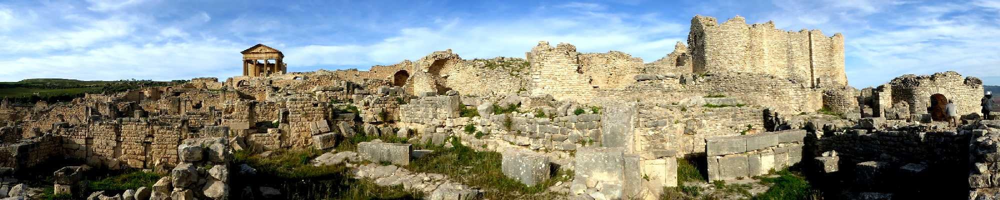
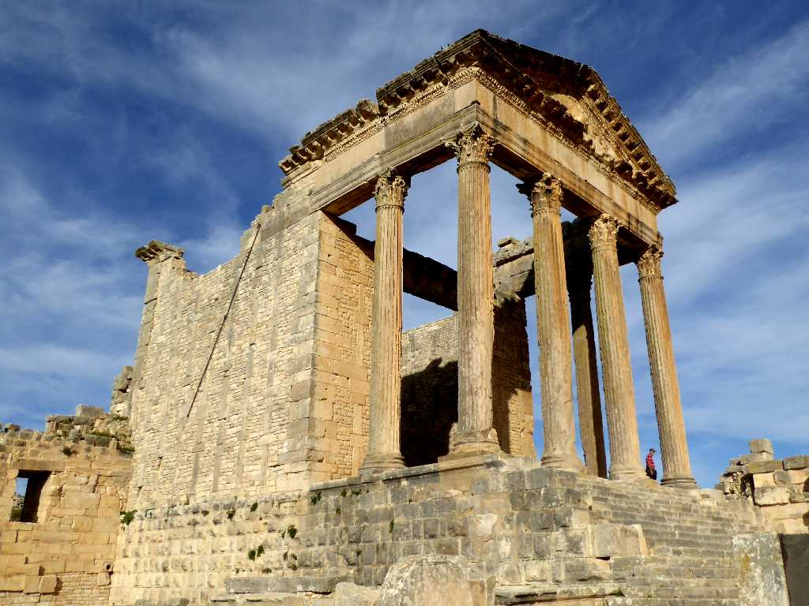
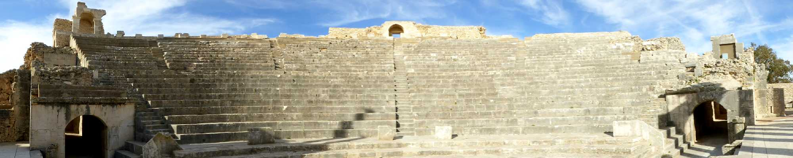
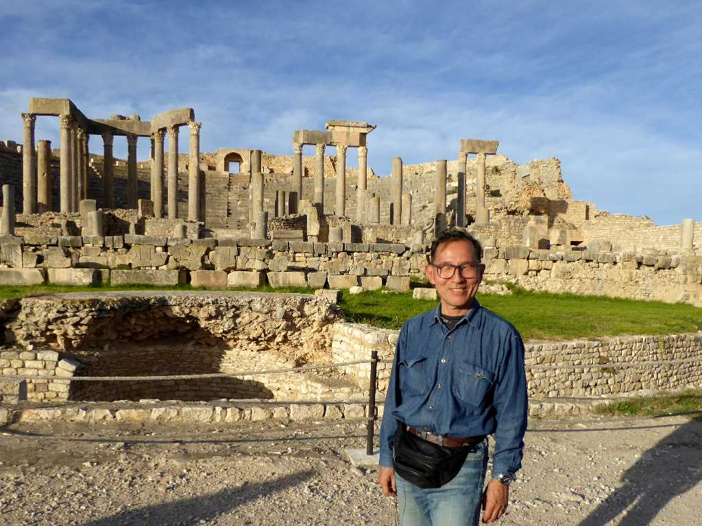
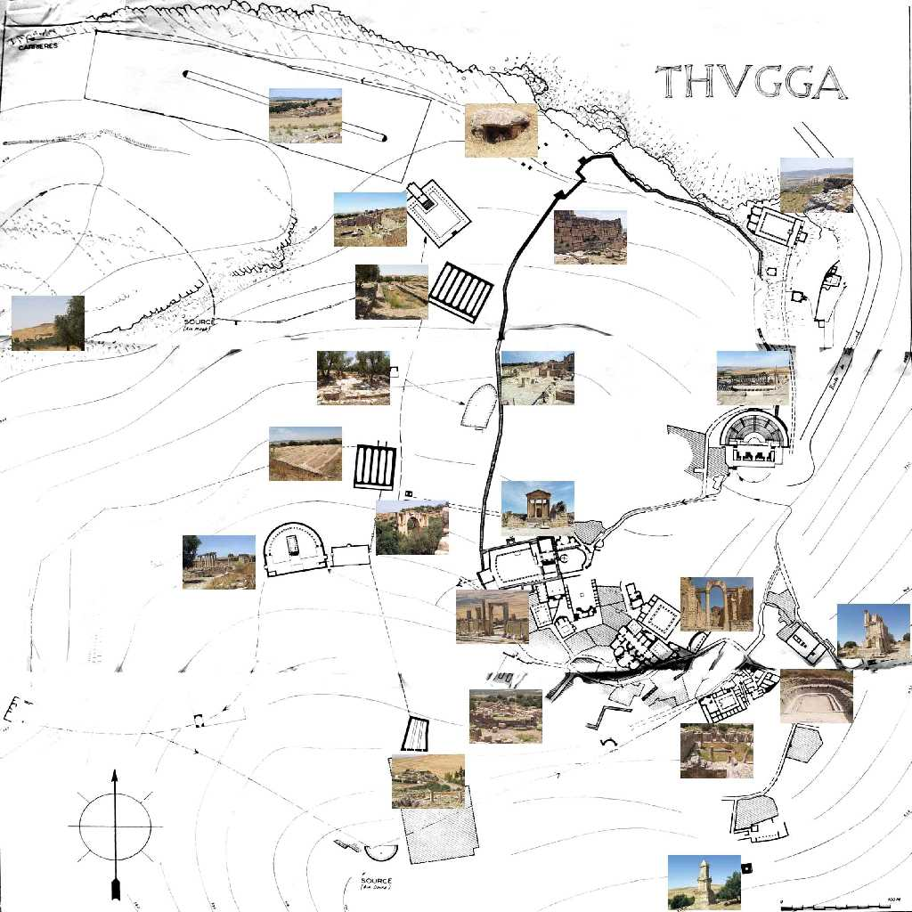

Dougga
ドゥッガは城壁に囲まれたベルベル人の村をローマ人が紀元前２世紀に支配し６５ヘクタールの街を築いた

Capitol Dougga
２世紀の最盛期に１万人が生活していたドゥッガの街の中心にある神殿キャピトルには正面に力の象徴である鷲の彫刻が残っている

Theater Dougga
古代ローマの３,５００人収容できる古代劇場跡

November 23 2018 Dougga
７世紀頃に衰退しイスラム時代に忘れ去られローマ時代の街全体を残す貴重な遺跡となった

Plan Dougga